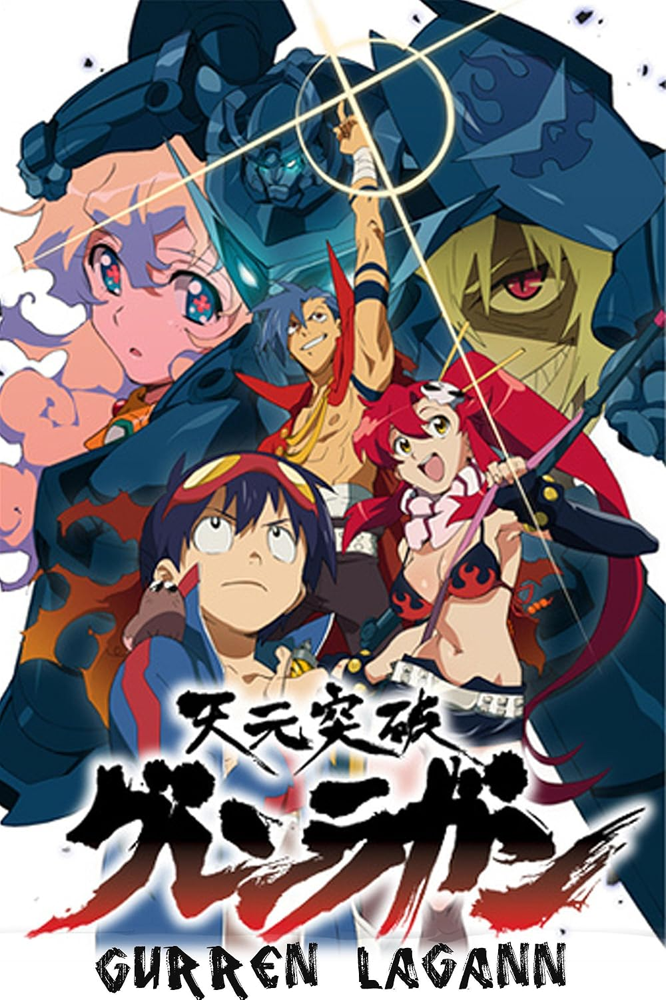

Meu nome completo é Pedro Campelo Lins, eu nasci e cresci em Recife. Durante a maior parte da minha vida eu
morei no bairro do Engenho do Meio, mas recentemente me mudei para o bairro do Cordeiro. Eu gosto de falar
que sou uma pessoa bem caseira e não curto muito lugares muito tumultuados e barulhentos, porém eu gosto
bastante de sair com os amigos para comer e beber algo, ir no cinema, viajar, jogar uns boardgames e conversar
sobre assuntos aleatórios. No geral eu sou um pouco tímido, introvertido e meio ruim de puxar assunto (mas eu
tento!), entretanto eu adoro fazer amizades e abraços.
Eu também sou espírita e gosto bastante em estudar sobre a doutrina espírita. Eu adotei o Espiritismo
recentemente (ano passado) e devo dizer que me ajudou muito desde então, é uma doutrina realmente maravilhosa
que propaga ensinamentos e virtudes extremamente bons. Inclusive, estou trabalhando voluntariamente em um
centro espírita (Quinta de Luz pra quem tiver curiosidade)! Além disso tudo, eu adoro ler (sejam livros físicos
ou digitais), assistir filmes, séries e animes, jogar no PC e jogar RPG de mesa (D&D principalmente), ouvir
música, estudar, aprender coisas novas e atualmente estou fazendo um curso de Japônes.
Eu gosto principalmente de filmes de Ficção Científica, Fantasia, Terror e Plot Twists. Eu gosto MUITO dos
filmes do Studio Ghibli e dos filmes do Christopher Nolan. Minhas menções honrosas vão para Meu Vizinho Totoro,
Ponyo, Ratatouille, Interstellar, A Origem, Oppenheimer, O Predestinado, Hereditário e Maligno. Porém, meus 3
filmes do coração sem dúvidas são esses:
Eu gosto de todo tipo de série: comédia, ficção, drama, ação, suspense, etc. As que mais gosto são Brooklyn 99,
What We Do In The Shadows, Modern Family, The Bear, Invincible, The Boys, The Expanse, Breaking Bad e Reacher.
Eu diria que minhas 3 séries favoritas são essas:
Também gosto de assistir animes e esse é um dos motivos que comecei a aprender japonês. Eu não vejo tantos
animes quanto eu vejo séries ou filmes, mas eu já assisti vários ao longo dos anos. O primeiro que assisti
por inteiro foi um clássico, Naruto, mas depois de tantos episódios eu decidi que não iria querer assistir
mais animes TÃO longos. Por isso, eu nunca vi e sinceramente não tenho interesse em assistir One Piece (podem
me julgar kkk). Dentre os que já assisti, os que mais gostei foram Hunter × Hunter, Dan Da Dan, Boku No Hero
Academia, The Promised Neverland, Jujutsu Kaisen e Attack On Titan. No entanto, os três animes seguintes
para mim são excepcionais:
-
 Fullmetal Alchemist: Brotherhood
Fullmetal Alchemist: Brotherhood
-
 Sousou no Frieren
Sousou no Frieren
-

Tengen Toppa Gurren-Lagann
Desde criança eu sempre fui muito fascinado por jogos. Os gêneros que mais gosto são Sobrevivência,
Exploração e RPG. Dentre os meus preferidos estão The Forest, Project Zomboid, Pokémon, Baldur's Gate 3,
a franquia Souls, Minecraft, Path of Exile, Cyberpunk 2077, Warframe e Conan Exiles. Porém, meu Top 3 jogos
favoritos de todos os tempos são:
Meu gosto musical é bem eclético, eu gosto de ouvir MPB, Rap e Hip Hop Americano, Dream Pop, Indie Rock,
Psychedelic Rock, Lo-Fi, Phonk, City Pop Japonês, Blues, R&B, um pouco de Jazz e por último, mas
definitivamente não menos importante, meu gênero musiscal favorito, Soul Music. As três músicas que mais
gosto de ouvir são:
 Wall-E
Wall-E